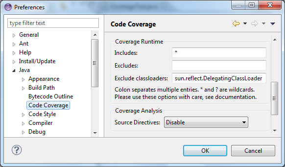

Update site: http://mchr3k-eclipse.appspot.com/
The new default filters listed under Features below are always enabled.
Source directives allow coverage to be turned on/off in arbitrary sections of code. The following directives are supported:
///COVERAGE:OFF ///COVERAGE:ON
To allow for easy migration from Clover the following directives are also recognised:
///CLOVER:OFF ///CLOVER:ON
Source directives are disabled by default. To enable them you must add a new section to your jacoco coverage ant task:
<jacoco:report>
<options>
<sourcedirectives/>
</options>
<executiondata>
<file file="${result.exec.file}"/>
</executiondata>
<structure name="JaCoCo Ant Example">
<classfiles>
<fileset dir="${result.classes.dir}"/>
</classfiles>
<sourcefiles encoding="UTF-8">
<fileset dir="${src.dir}"/>
</sourcefiles>
</structure>
<html destdir="${result.report.dir}"/>
</jacoco:report>
By default source directives will only be recognised when directives that turn off coverage are acomapnied by a comment e.g.
///COVERAGE:OFF because the following code is too simple to bother unit testing.
This requirement can be disabled by adding an extra parameter to the ant task:
<options>
<sourcedirectives requirecomment="false"/>
</options>
Source Directives support can be configured through a new option in the Code Coverage preferences. This feature is disabled by default.

This fork adds the following:
Further details about this project can be found on my blog:
Source directives are currently supported by Clover so this section discussed how to migrate your build from Clover to JaCoCo. This example also assumes you will use offline instrumentation which allows tools like Powermock to work.
These instructions assume you store the required jacoco jars in the following locations:
Clover
<taskdef resource="clovertasks" /> <typedef resource="clovertypes" />
JaCoCo
<taskdef resource="org/jacoco/ant/antlib.xml"> <classpath path="lib/build/jacocoant.jar"/> </taskdef>
Clover
<clover-setup initString="./reports/coverage/metadata/coverage.db">
<fileset dir="./build/src" />
</clover-setup>
<clover-clean />
<javac destdir="./build/classes_instr" debug="true">
<src path="./build/src" />
<classpath>
<fileset dir="./lib" includes="*.jar" />
<fileset dir="./lib/test" includes="*.jar" />
</classpath>
</javac>
JaCoCo
<instrument destdir="./build/classes_instr"> <fileset dir="./build/classes" includes="**/*.class"/> </instrument>
Clover - include clover.jar in junit classpath.
JaCoCo - include jacocoagent.jar in junit classpath. You also need to set a sysproperty within the junit task:
<sysproperty key="jacoco-agent.destfile" file="./reports/coverage/jacoco.exec"/>
Clover
<clover-report>
<current outfile="./reports/coverage">
<format type="html" orderBy="ElementsCoveredDesc" />
</current>
<current outfile="./reports/coverage/current.xml" />
</clover-report>
JaCoCo
<report>
<options>
<sourcedirectives/>
</options>
<executiondata>
<file file="./reports/coverage/jacoco.exec"/>
</executiondata>
<structure name="ProjectName">
<classfiles>
<fileset dir="./build/classes"/>
</classfiles>
<sourcefiles encoding="UTF-8">
<fileset dir="./src"/>
</sourcefiles>
</structure>
<html destdir="./reports/coverage"/>
</report>
Fixed handling of source directives in light of:
Initial release with new filters.